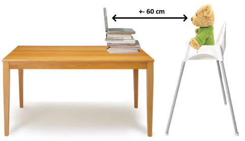
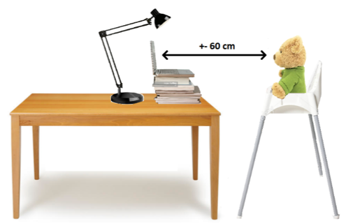

<!DOCTYPE html>
<html>
    <head>
    <meta charset="UTF-8">
    
    <title>Many Babies @Home </title>

    <script src="https://web-experiments.lab.hum.uu.nl/jspsych/6.1.0/jspsych.js"></script>
    <script src="https://web-experiments.lab.hum.uu.nl/jspsych/6.1.0/plugins/jspsych-html-keyboard-response.js"></script>
    <script src="https://web-experiments.lab.hum.uu.nl/jspsych/6.1.0/plugins/jspsych-html-button-response.js"></script>
    
    <!-- Audio playback &response libraries (audio) -->
    <script src="https://web-experiments.lab.hum.uu.nl/jspsych/6.1.0/plugins/jspsych-audio-button-response.js"></script>
    <script src="https://web-experiments.lab.hum.uu.nl/jspsych/6.1.0/plugins/jspsych-audio-keyboard-response.js"></script>

    <!-- Video -->
    <script src="https://web-experiments.lab.hum.uu.nl/jspsych/6.1.0/plugins/jspsych-video-keyboard-response.js"></script>
    <!-- External HTML for Maaike's (osweb) file -->
    <script src="https://web-experiments.lab.hum.uu.nl/jspsych/6.1.0/plugins/jspsych-external-html.js"></script>
    
    <!-- preload media (new plugin since 6.3?) -->
<!--     <script src="https://web-experiments.lab.hum.uu.nl/jspsych/6.1.0/plugins/jspsych-preload.js"></script>
 -->

    <!-- Generic check/ask libraries (instructions & surveys) -->
    <script src="https://web-experiments.lab.hum.uu.nl/jspsych/6.1.0/plugins/jspsych-instructions.js"></script>
    <script src="https://web-experiments.lab.hum.uu.nl/jspsych/6.1.0/plugins/jspsych-survey-html-form.js"></script>
    <script src="https://web-experiments.lab.hum.uu.nl/jspsych/6.1.0/plugins/jspsych-survey-multi-choice.js"></script>
    <script src="https://web-experiments.lab.hum.uu.nl/jspsych/6.1.0/plugins/jspsych-survey-multi-select.js"></script>
    
    <!--this was originally used (with a hack to get white table) borders (now in GRID_HTML) -->
    <script src="https://web-experiments.lab.hum.uu.nl/jspsych/6.1.0/plugins/jspsych-vsl-grid-scene.js"></script>

    <!-- Generic jspsych style sheet -->
    <link href="https://web-experiments.lab.hum.uu.nl/jspsych/6.1.0/css/jspsych.css" rel="stylesheet" type="text/css"/>

    <!-- UU fonts -->
    <link href=https://web-experiments.lab.hum.uu.nl/jspsych/uil-utils/0.0/fonts.css rel="stylesheet" type="text/css"/>
  
    <!-- Uil OTS libraries -->
<!--     <script src="https://web-experiments.lab.hum.uu.nl/jspsych/uil-utils/0.0/jspsych-uil-utils.js"></script>
 --><!--     <script src="https://web-experiments.lab.hum.uu.nl/jspsych/uil-utils/dev/jspsych-uil-utils.js"></script>
 -->
    <script src="_utils_browserinfo/jspsych-uil-utils-feature-browser-info/jspsych-uil-utils.js" type="text/javascript"></script>

     <!-- Uil OTS organised  -->
    <script src="stimuli.js"></script>
    <script src="globals.js"></script>
    <script src="consent.js"></script>
    <script src="survey.js"></script>
    <script src="instructions.js"></script>

    <style>

    .instruction {
        text-align: left !important;
        margin: 5% 10% 5% 10%;
    }

    kbd {
        border-radius: 2px;
        padding: 2px;
        border: 1px solid black;
    }

        /* UU-like Link styles */
    a {
        color: rgb(33, 37, 41);
        text-decoration: underline;
        transition: 0.2s ease color;
    }

    a:hover {
        transition: 0.2s ease color;
        color: rgb(85, 85, 95);
    }

    span::after {
        padding-left: 1%;
    }

    /* survey layout text-align */

    .survey {
        text-align: left !important;
        margin: 5% 10% 5% 10% !important;
    }

    .jspsych-survey-html-form {
        text-align: left !important;
    }

    .jspsych-survey-multi-choice-question {
        text-align: left !important;
    }

    .jspsych-survey-multi-choice-horizontal {
        text-align: left !important;
    }

    .jspsych-survey-multi-choice-text {
        text-align: left !important;
    }

    .jspsych-survey-multi-choice-option {
        text-align: left !important;
    }

    /* valid input feedback (survey) */ 

    input:invalid + span::after {
        content: '✖';
    }

    input:valid+span::after {
        content: '✓';
    }

    /* and some style for un-ordered list bullets */
    .bullet-close {
         list-style-type: disc;
    }
    
    .bullet-open {
         list-style-type: circle;
         margin-left: 1em;
     }

    </style>
    </head>
    <body></body>
    <script>
    
    // Wait until the browser has loaded all files, then execute the
    // contents of this method
    window.addEventListener('load', function() {

        // load stimuli
        let baseline_items = getBaselineItems().table;
        
        let paired_items_all = getAllPairedItems().table;
        //console.log(paired_items_all)

        let grabber_items_one = getGrabberOneItems().table;

        let grabber_items_two = getGrabberTwoItems().table;

        let pref_items = getAllPrefItems().table;

        // cutting the original paired timeline in pairs...ugly, but as of yet
        // unsure of what's best otherwise
        let paired_a = [
            paired_items_all[0],
            paired_items_all[1]
            ];

        let paired_b = [
            paired_items_all[2],
            paired_items_all[3]
            ];

        let paired_c = [
            paired_items_all[4],
            paired_items_all[5]
            ];

        let paired_d = [
            paired_items_all[6],
            paired_items_all[7]
            ];
        
        let paired_e = [
            paired_items_all[8],
            paired_items_all[9]
            ];

        let paired_f = [
            paired_items_all[10],
            paired_items_all[11]
            ];

        let paired_g = [
            paired_items_all[12],
            paired_items_all[13]
            ];

        let paired_h = [
            paired_items_all[14],
            paired_items_all[15]
            ];

        let paired_one = [
                paired_items_all[0],
                paired_items_all[2],        
                paired_items_all[4],
                paired_items_all[6],
                paired_items_all[8],
                paired_items_all[10],
                paired_items_all[12],
                paired_items_all[14]
                ];

        let paired_two = [
                paired_items_all[1],
                paired_items_all[3],        
                paired_items_all[5],
                paired_items_all[7],
                paired_items_all[9],
                paired_items_all[11],
                paired_items_all[13],
                paired_items_all[15]
                ];


        //console.log(paired_one);
        //console.log(paired_two);

        ////////////////////////// MEDIA PRELOADING /////////////////////////////
        
        // BASELINE /////////////////////////////////////////////////////////////
        var baseline_audio = [];
        for (var i=0; i< baseline_items.length; i++) {
            baseline_audio.push(baseline_items[i].sound_fn);
        };

        var baseline_videos = [];
        for (var i=0; i< baseline_items.length; i++) {
            baseline_videos.push(baseline_items[i].image_fn + ".mp4");
            baseline_videos.push(baseline_items[i].image_fn + ".webm");
        };
                
        // PAIRED
        var paired_audio = [];
        for (var i=0; i< paired_items_all.length; i++) {
            paired_audio.push(paired_items_all[i].sound_fn);
        };

        var paired_videos = [];
        for (var i=0; i< paired_items_all.length; i++) {
            paired_videos.push(paired_items_all[i].image_fn + ".mp4");
            paired_videos.push(paired_items_all[i].image_fn + ".webm");
        };

        // PREFERENTIAL //////////////////////////////////////////////////////////
        var pref_audio = [];
        for (var i=0; i< pref_items.length; i++) {
            pref_audio.push(pref_items[i].sound_fn);
        };

        var pref_videos = [];
        for (var i=0; i< pref_items.length; i++) {
            pref_videos.push(pref_items[i].image_fn + ".mp4");
            pref_videos.push(pref_items[i].image_fn + ".webm");
        };
        
        // GRABBER ////////////////////////////////////////////////////////////////
        var grabber_audio_one = [];
        for (var i=0; i< grabber_items_one.length; i++) {
            grabber_audio_one.push(grabber_items_one[i].sound_fn);
        };

        var grabber_video_one = [];
        for (var i=0; i< grabber_items_one.length; i++) {
            grabber_video_one.push(grabber_items_one[i].image_fn + ".mp4");
            grabber_video_one.push(grabber_items_one[i].image_fn + ".webm");
        };

        var grabber_audio_two = [];
        for (var i=0; i< grabber_items_two.length; i++) {
            grabber_audio_two.push(grabber_items_two[i].sound_fn);
        };

        var grabber_video_two= [];
        for (var i=0; i< grabber_items_two.length; i++) {
            grabber_video_two.push(grabber_items_two[i].image_fn + ".mp4");
            grabber_video_two.push(grabber_items_two[i].image_fn + ".webm");
        };
     
        // TEST SOUNDS
        var check_audio = ['./sounds/testtune.mp3'];

        // TEST VIDEOS
        var check_qrvideo = ['./video/qrcodes/qrspeed.mp4','./video/qrcodes/qrspeed.webm'];
        var bgvideo = [
            './video/01_left.mp4',
            './video/01_left.webm',
            './video/02_center.mp4',
            './video/02_center.webm',
            './video/03_right.mp4',
            './video/03_right.webm'
        ];

        // REGULAR JS FUNCTIONS
        // to change background styles

        function set_html_to_grey() {
            document.body.style.backgroundColor = GREY_HEX; // background color RGBA-mode
            document.body.style.color = 'black' // font color
        }

        function set_html_to_white() {
            document.body.style.backgroundColor = 'white'
            document.body.style.color = 'black'
        }

        function set_html_to_orange() {
            document.body.style.backgroundColor = 'orange'
            document.body.style.color = 'black'
        }

        function set_html_to_green() {
            document.body.style.backgroundColor = 'green'
            document.body.style.color = 'black'
        }

        function set_paragraph_text_to_small() {
            document.body.style.fontSize = "0.5em"
        }


        // Data one would like to add to __all__ trials, according to:
        // https://www.jspsych.org/overview/data/
        
        let subject_id = jsPsych.randomization.randomID(8);
        let browser_info = uil.browser.getBrowserInfo();
        let screen_resolution_info_start = uil.browser.getResolutionInfo();

        // buy a bit of time to get browser infos
        setTimeout(() => {  console.log("wait a bit..."); }, 1000);

        console.log('browser info (undefined?)');
        console.log(browser_info);

        console.log('screen res (start');
        console.log(screen_resolution_info_start);

        // UTILS, setting ACCES KEY and stopIfExperimentClosed()
        //uil.setAccessKey(ACCESS_KEY);
        console.log("HA, ACCESS KEY");
        console.log(ACCESS_KEY);
        //uil.stopIfExperimentClosed();


        jsPsych.data.addProperties({
            subject: subject_id,
            browserinfo: browser_info,
        });


        ////////////////////////////////////////////////////////////////////////////////////////
        //// screens/(sub-)(trial-)phases...////////////////////////////////////////////////////

        let start_screen = {
            type: 'html-button-response',
            stimulus: function(){
                return "<div class='instruction' >" +
                       "<p>" + GENERIC_CHECK + "</p></div>";
            },
            choices: [NEXT_BUTTON_TEXT],
            response_ends_trial: true,
            data: { resolution: uil.browser.getResolutionInfo()}
        };

        let setup_screens_multi = {
            type: 'instructions',
            button_label_next: "Volgende",
            button_label_previous: "Vorige",
            allow_backward: true,
            pages: [
                CONSENT_HTML_STYLE_UU + CAREGIVER_INSTRUCTION_PRE_IMAGE_TEXT + 
                    "<br><br>" + '</img>' + 
                    "<strong> ◄ OF ► </strong>" + 
                    '</img>' + 
                    CAREGIVER_INSTRUCTION_POST_IMAGE_TEXT_1,
                CONSENT_HTML_STYLE_UU +  
                    "<br><br>" + '</img>' + 
                    "<strong> ◄ OF ► </strong>" + 
                    '</img>' + 
                    CAREGIVER_INSTRUCTION_POST_IMAGE_TEXT_2,
                CONSENT_HTML_STYLE_UU + 
                    "<br><br>" + '</img>' + 
                       CAREGIVER_INSTRUCTION_SOOTHING,
                ],
            show_clickable_nav: true,
        }

        let instruction_screen_layout = {
            type: 'html-button-response',
            stimulus: function(){
                let text = PRE_LAYOUT_MESSAGE;
                return "<div class='instruction' >" +
                       "<p>" + text + "</p></div>";
            },
            choices: [ OK_BUTTON_TEXT ],
            response_ends_trial: true,
        };

        let setup_validate_checkbox = {
            type: 'survey-multi-select',
            preamble: "<div class= 'instruction' >" + CONSENT_HTML_STYLE_UU + "<h2>Opstelling gereed</h2>" +
                '</img>',
            required_message: IF_REQUIRED_FEEDBACK_MESSAGE_SETUP,
            button_label: NEXT_BUTTON_TEXT,
            questions: [
                {
                    prompt: "", 
                    options: [ CAREGIVER_VALIDATE_SETUP_STATEMENT ], 
                    horizontal: true,
                    required: true,
                    name: SETUP_REFERENCE_NAME
                }
            ],
            data: { resolution: uil.browser.getResolutionInfo()},
            on_finish: function(data){
                let setup_validated_choice = data.responses;   
                data.setup_validated = setup_validated_choice;
            }
        };

        // globals for this are in instruction.js
        let instruction_screen_rec_checkbox = {
            type: 'survey-multi-select', //used to be survey-multi-select
            preamble: "<div class= 'instruction' >" + "<h2>" + CONSENT_HTML_STYLE_UU + "</h2>" +
                PRE_REC_MESSAGE_CHECKBOX,
            required_message: IF_REQUIRED_FEEDBACK_MESSAGE_REC,
            button_label: START_REAL_TASK_BUTTON_TEXT,
            questions: [
                {
                    prompt: "", 
                    options: [REC_STARTED_STATEMENT], 
                    horizontal: true,
                    required: true,
                    name: REC_REFERENCE_NAME
                }
            ],
            on_finish: function(data){
                let rec_started_choice = data.responses;   
                data.rec_started_choice_response = rec_started_choice;
            }
        };

        let check_screen_layout = {
            type: 'html-button-response',
            stimulus: function(){
                let table = GRID_HTML_LAYOUT;
                return table;
            },
            choices: [ NEXT_BUTTON_TEXT ],
            response_ends_trial: true,
            data: { resolution: uil.browser.getResolutionInfo() }
        };

        let left_and_right_screen = {
            type: 'audio-button-response',
            on_start: set_html_to_grey,
            stimulus: jsPsych.timelineVariable('sound_fn'),
            prompt: function() {
                
                var grid = GRID_HTML_LEFT_RIGHT

                var gridleft = grid.replaceAll("./video/01_left",
                        jsPsych.timelineVariable('image_fn_left'));

                var gridright = gridleft.replaceAll("./video/03_right",
                        jsPsych.timelineVariable('image_fn_right'));

                return gridright;
            },
            response_ends_trial: false,
            trial_ends_after_audio: false,
            trial_duration: 2950,
            choices: [],
            on_finish: set_html_to_white,
            data: {
                target_audio: jsPsych.timelineVariable('sound_fn'),
                target_image_a: jsPsych.timelineVariable('image_fn_left'),
                target_image_b: jsPsych.timelineVariable('image_fn_right'),
                resolution: uil.browser.getResolutionInfo()
            }
        };


        let left_or_right_screen = {
            type: 'audio-button-response',
            on_start: set_html_to_grey,
            stimulus: jsPsych.timelineVariable('sound_fn'),
            prompt: function() {
                
                var side = jsPsych.timelineVariable('side', true);
                
                console.log('side: ' + side);

                var grid = GRID_HTML_LEFT_RIGHT;
                if ( side === 0 ){
                    var newgrid = grid.replaceAll("./video/01_left",
                        jsPsych.timelineVariable('image_fn'));
                } else if (side === 1 ) {
                    var newgrid = grid.replaceAll("./video/03_right",
                        jsPsych.timelineVariable('image_fn'));
                    //console.log("OR screen gridright: ", newgrid)
                } else {
                    console.error("Stimulus side is unknown or undefined...");
                    var newgrid = 'error';
                }
                return newgrid;
            },
            response_ends_trial: false,
            trial_ends_after_audio: false,
            trial_duration: 1950,
            choices: [],
            on_finish: set_html_to_white,
            data: {
                target_audio: jsPsych.timelineVariable('sound_fn'),
                target_image: jsPsych.timelineVariable('image_fn'),
                resolution: uil.browser.getResolutionInfo()
            }
        };

        let left_or_right_screen_two = {
            type: 'audio-button-response',
            on_start: set_html_to_grey,
            stimulus: jsPsych.timelineVariable('sound_fn'),
            prompt: function() {
                
                var side = jsPsych.timelineVariable('side', true);
                
                console.log('side: ' + side);

                var grid = GRID_HTML_LEFT_RIGHT;
                if ( side === 0 ){
                    var newgrid = grid.replaceAll("./video/01_left",
                        jsPsych.timelineVariable('image_fn'));
                } else if (side === 1 ) {
                    var newgrid = grid.replaceAll("./video/03_right",
                        jsPsych.timelineVariable('image_fn'));
                } else {
                    console.error("Stimulus side is unknown or undefined...");
                    var newgrid = 'error';
                }
                return newgrid;
            },
            response_ends_trial: false,
            trial_ends_after_audio: false,
            trial_duration: 1950,
            choices: [],
            on_finish: set_html_to_white,
            data: {
                target_audio: jsPsych.timelineVariable('sound_fn'),
                target_image: jsPsych.timelineVariable('image_fn'),
                resolution: uil.browser.getResolutionInfo()
            }
        };

        let center_screen = {
            type: 'audio-button-response',
            on_start: set_html_to_grey,
            stimulus: jsPsych.timelineVariable('sound_fn'),
            prompt: function() {

                var grid = GRID_HTML_CENTER;
                    var grida = grid.replaceAll("./video/02_center",
                        jsPsych.timelineVariable('image_fn')
                        );
                    var newgrid = grida;
                return newgrid;
            },
            response_ends_trial: false,
            trial_ends_after_audio: false,
            trial_duration: 2450,
            choices: [],
            on_finish: set_html_to_white,
            data: {
                target_audio: jsPsych.timelineVariable('sound_fn'),
                target_image_a: jsPsych.timelineVariable('image_fn'),
                resolution: uil.browser.getResolutionInfo()
            }
        };

        let qr_screen = {
            type: 'video-keyboard-response',
            on_start: set_html_to_white,
            stimulus: './video/qrcodes/qrspeed.webm',
            sources: [
                './video/qrcodes/qrspeed.webm',
                './video/qrcodes/qrspeed.mp4'
                ],
            prompt: "Showcasing (QR sync method)",
            response_ends_trial: false,
            trial_ends_after_video: false,
            controls: true,
            rate: 1,
            trial_duration: 2450,
            choices: jsPsych.ALL_KEYS,
            on_finish: set_html_to_white,
            response_allowed_while_playing: true,
            autoplay: true
        };

        let binary_screen = {
            type: 'video-keyboard-response',
            on_start: set_html_to_grey,
            stimulus: './video/bincodes/256-bincodes.webm',
            sources: [
                './video/bincodes/256-bincodes.webm',
                './video/bincodes/256-bincodes.mp4'
                ],
            prompt: "Sync binary image...",
            response_ends_trial: false,
            trial_ends_after_video: false,
            controls: true,
            rate: 1,
            trial_duration: 2450,
            choices: jsPsych.ALL_KEYS,
            on_finish: set_html_to_white,
            response_allowed_while_playing: true,
            autoplay: true
        };

        let sync_screen = {
            type: 'audio-keyboard-response',
            on_start: set_html_to_white,
            stimulus: "./sounds/beep.mp3",
            prompt: "",
            response_ends_trial: false,
            trial_ends_after_audio: false,
            trial_duration: 450,
            choices: jsPsych.NO_KEYS,
            on_finish: set_html_to_white
        };

        let sync_screen_orange = {
            type: 'audio-keyboard-response',
            on_start: set_html_to_orange,
            stimulus: "./sounds/beep.mp3",
            prompt: "orange!",
            response_ends_trial: false,
            trial_ends_after_audio: false,
            trial_duration: 450,
            choices: jsPsych.NO_KEYS,
            on_finish: set_html_to_white
        };

        let sync_screen_green = {
            type: 'audio-keyboard-response',
            on_start: set_html_to_green,
            stimulus: "./sounds/beep.mp3",
            prompt: "green!",
            response_ends_trial: false,
            trial_ends_after_audio: false,
            trial_duration: 450,
            choices: jsPsych.NO_KEYS,
            on_finish: set_html_to_white
        };

        let exp_done_screen = {
            type: 'html-button-response',
            stimulus: function(){
                return "<div class='instruction' >" +
                    '<p>' + POST_REC_MESSAGE + '</p></div>';
            },
            choices: [NEXT_BUTTON_TEXT],
            response_ends_trial: true,
            data: { resolution: uil.browser.getResolutionInfo() }
        };

        let gift_screen = {
            type: 'html-button-response',
            stimulus: function(){
                return "<div class='instruction' >" +
                    '<p>' + GIFT_MESSAGE + '</p></div>';
            },
            choices: [NEXT_BUTTON_TEXT],
            response_ends_trial: true,
            data: { resolution: uil.browser.getResolutionInfo() }
        };

        let end_screen = {
            type: 'html-button-response',
            stimulus: DEBRIEF_MESSAGE,
            choices: [],
            trial_duration: DEBRIEF_MESSAGE_DURATION
        };

        // PROCEDURES ////////////////////////////////

        let baseline_procedure = {
            timeline:[
                left_or_right_screen
                ],
            timeline_variables: baseline_items,
            randomize_order: false
        };

        let grabber_procedure_one = {
            timeline:[ 
                center_screen
                ],
            timeline_variables: grabber_items_one,
            randomize_order: false
        };

        let grabber_one = {
            type: 'audio-button-response',
            on_start: set_html_to_grey,
            stimulus: "./sounds/AT3-audio.mp3",
            prompt: function() {

                var grid = GRID_HTML_CENTER;
                    var grida = grid.replaceAll("./video/02_center",
                        "./video/clock-grabber"
                        );
                    var newgrid = grida;
                return newgrid;
            },
            response_ends_trial: false,
            trial_ends_after_audio: false,
            trial_duration: 2450,
            choices: [],
            on_finish: set_html_to_white,
        };

        let grabber_procedure_two = {
            timeline:[
                center_screen
                ],
            timeline_variables: grabber_items_two,
            randomize_order: false
        };

        // Zipping two arrays into an object, better performance than map

        // let labels = ['a', 'b', 'c']
        // let values = [1, 2, 3]
        // let out = {}
        // for (var i = 0; i < labels.length; i++) {
        //     out = { ...out, [labels[i]]: values[i] }
        //  }
        // console.debug(out);
        // { a: 1, b: 2, c: 3 }

        let paired_procedure_a = {
            timeline: [
                left_or_right_screen,
                ],
            timeline_variables: [
                paired_one[0], 
                paired_two[0]
                ],
            randomize_order: false
        };

        let paired_procedure_b = {
            timeline: [
                left_or_right_screen,
                ],
            timeline_variables: [
                paired_one[1],
                paired_two[1]
                ],
            randomize_order: false
        };

        let paired_procedure_c = {
            timeline: [
                left_or_right_screen,
                ],
            timeline_variables: [
                paired_one[2], 
                paired_two[2]
                ],
            randomize_order: false
        };

        let paired_procedure_d = {
            timeline: [
                left_or_right_screen,
                ],
            timeline_variables: [
                paired_one[3],
                paired_two[3]
                ],
            randomize_order: false
        };

        let paired_procedure_e = {
            timeline: [
                left_or_right_screen,
                ],
            timeline_variables: [
                paired_one[4],
                paired_two[4]
                ],
            randomize_order: false
        };

        let paired_procedure_f = {
            timeline: [
                left_or_right_screen,
                ],
            timeline_variables: [
                paired_one[5],
                paired_two[5]
                ],
            randomize_order: false
        };

        let paired_procedure_g = {
            timeline: [
                left_or_right_screen,
                ],
            timeline_variables: [
                paired_one[6],
                paired_two[6]
                ],
            randomize_order: false
        };

        let paired_procedure_h = {
            timeline: [
                left_or_right_screen,
                ],
            timeline_variables: [
                paired_one[7],
                paired_two[7]
                ],
            randomize_order: false
        };

        let pref_procedure = {
            timeline:[
                grabber_procedure_two,
                left_and_right_screen
                ],
            timeline_variables: pref_items,
            randomize_order: false,
        };        

        /////////////////////////////////////////////

        // THE 'BIG STUFF' HAPPENS HERE

        //////////////// timeline /////////////////////////////////

        let timeline = [];

        // it's best practice to have *mouse click* user I/O first
        timeline.push(start_screen);
        
        //timeline.push(qr_screen);
        
        //timeline.push(binary_screen);

        // Informed consent (consent.js)
        timeline.push(consent_procedure);

        // personal code
        timeline.push(personal_code_multi_html_block);
        
        // setup part 1 = tech
        // setup part 2 = ethical
        // setup part 3 = validation
        // timeline.push(setup_screen_one);
        // timeline.push(setup_screen_two);
        timeline.push(setup_screens_multi);
        timeline.push(setup_validate_checkbox);
        
        // survey
        //timeline.push(survey_procedure);

        //test/set audio level (soundtest.js)
        timeline.push(test_audio_looped);
        
        timeline.push(instruction_screen_layout);

        timeline.push(check_screen_layout);

        // task instruction (instructions.js)
        timeline.push(instruction_screen_rec_checkbox);

        // BASELINE //////////////////////////////////////
        timeline.push(baseline_procedure);
        timeline.push(sync_screen);

        // PAIREWISE /////////////////////////////////////
        // timeline.push(paired_procedure);

        // this is horrible coding/lusing timelines, but it might just be the best way to
        // commnit a working example of the right kinds.
        // the sixteen items are split in halves and each of these form tuple-timeline procedures of the 'pairs'

        timeline.push(grabber_one);
        timeline.push(paired_procedure_a);

        timeline.push(grabber_one);
        timeline.push(paired_procedure_b);

        timeline.push(grabber_procedure_one);
        timeline.push(paired_procedure_c);

        timeline.push(grabber_one);
        timeline.push(paired_procedure_d);
        
        timeline.push(grabber_one);
        timeline.push(paired_procedure_e);

        timeline.push(grabber_one);
        timeline.push(paired_procedure_f);

        timeline.push(grabber_one);
        timeline.push(paired_procedure_g);

        timeline.push(grabber_one);
        timeline.push(paired_procedure_h);

        timeline.push(sync_screen_orange)

        // PREFERENTIAL LOOKING //////////////////////////
        timeline.push(pref_procedure);
        timeline.push(sync_screen_green)

        timeline.push(exp_done_screen);

        timeline.push(gift_screen);
        
        timeline.push(end_screen);

        // Start jsPsych when running on a Desktop or Laptop style pc.
        if (! uil.isMobileOrTablet()) {
            jsPsych.init({
                timeline: timeline,
                show_progress_bar: true,
                message_progress_bar: 'Voortgang ',
                preload_audio: [
                    check_audio,
                    baseline_audio,
                    paired_audio,
                    pref_audio,
                    grabber_audio_one,
                    grabber_audio_two
                    ],
                preload_video: [
                    check_qrvideo,
                    bgvideo,
                    baseline_videos,
                    paired_videos,
                    grabber_video_one,
                    grabber_video_two
                    ],
                exclusions: {
                    min_width: MIN_WIDTH,
                    min_height: MIN_HEIGHT
                },
                on_finish: function() {
                    uil.saveData(ACCESS_KEY);
                }
            });
        }
        else { // or bail out.
            let paragraph = document.createElement("p")
            paragraph.innerHTML = BAIL_OUT_MOBILE_TEXT;
            document.body.appendChild(paragraph);
        }
    })
    </script>
</html>